Every game word you need, in order of how much you'll use it.
The board
Word
What it means
Active Spot
The one Pokémon out front. It's the only one that can attack, and it's the only one that can be attacked.
Bench
Your other Pokémon, waiting behind. You can have up to 5. They're safe from most attacks, but they can't attack either.
Hand
The cards you're holding.
Deck
Your face-down pile you draw from.
Discard pile
Where used and knocked-out cards go. Not gone forever — some cards fish things back out.
Prize cards
6 cards you set aside at the start. Every time you knock out a Pokémon, you take one. Take all 6 and you win.
Pokémon
Word
What it means
Basic
A Pokémon you can play straight from your hand onto the Bench. Charmander, Eevee, and Sudowoodo are your Basics.
Stage 1
Evolves from a Basic. You put it on top of the Basic.
Stage 2
Evolves from a Stage 1. The biggest ones.
Evolve
Put an evolution card on top of the Pokémon it grows from. It keeps its Energy and its damage. You can't evolve a Pokémon the same turn you played it — unless a card says you can.
HP
How much damage a Pokémon can take before it's knocked out.
Damage counter
A little marker worth 10 damage. So 3 damage counters = 30 damage.
Knocked Out (KO)
When damage reaches a Pokémon's HP, it goes to the discard pile and your opponent takes a Prize card.
Weakness
If a Pokémon is Weak to a type, attacks of that type do double damage to it. Your Charizard is Weak to Water ×2.
Resistance
The opposite — that type does less damage. None of your cards have it.
Retreat cost
How much Energy you discard to move your Active Pokémon back to the Bench. Charizard's is 3, which is a lot.
Ability
Free text on a Pokémon that just works. It is not an attack. Using an Ability does not end your turn.
Energy and attacks
Word
What it means
Energy
Cards you attach to Pokémon so they can attack. You may attach only 1 Energy per turn from your hand.
[R]
A Fire Energy symbol. Only a Fire Energy pays for it.
[C]
A Colorless symbol. Any Energy pays for it — including a Fire Energy.
Attack cost
The symbols next to an attack. You need that much Energy attached to use it.
Attacking ends your turn.
Do everything else first. Once you attack, your turn is over.
Trainer cards
Word
What it means
Trainer
Any card that isn't a Pokémon or an Energy. There are four kinds:
Supporter
Only 1 per turn. These are the powerful ones. Choosing which one is your biggest decision each turn.
Item
Play as many as you want in a turn.
Stadium
Stays on the table and changes the rules for both players. Only one Stadium can be out at a time — playing a new one throws the old one away.
Pokémon Tool
Attaches to a Pokémon and stays there. Your deck doesn't have any, but your dad's does.
Rules that trip people up
Word
What it means
Mulligan
If your first 7 cards have no Basic Pokémon, show your hand, shuffle it back, and draw 7 again. Your opponent draws 1 extra card. It's not a loss — just a do-over.
Going first
Whoever goes first cannot attack on their first turn. Use that turn to set up instead.
Confused
A Special Condition. When a Confused Pokémon tries to attack, flip a coin. Tails = the attack does nothing, that Pokémon takes 30 damage, and the turn ends. It only wears off when the Pokémon leaves the Active Spot. Your dad's Weezing does this a lot.
Special Condition
Confused, Asleep, Paralyzed, Poisoned, or Burned. They all go away when the Pokémon leaves the Active Spot.
Rule Box
A grey box of extra rules at the bottom of really strong cards (the ones marked ex or V). Those are worth 2 or 3 Prize cards instead of 1. Nobody is playing any in these two decks.
4-copy limit
You may have at most 4 cards with the same name in a deck. Basic Energy is the one exception — you can have as many as you want.
Deck List
x4x2x3x3x2x2
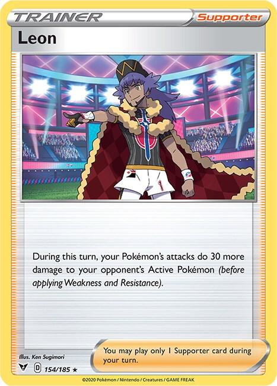
x4
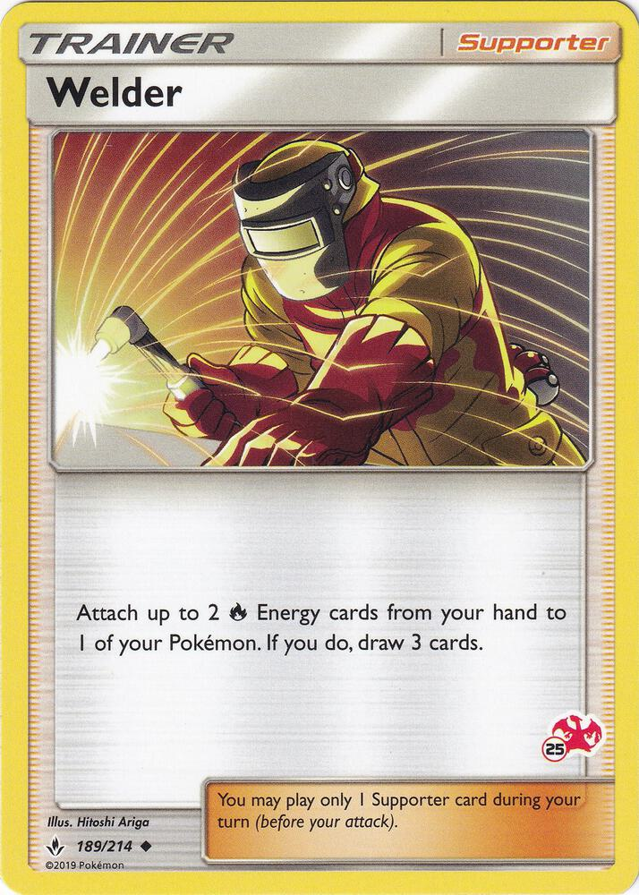
x2
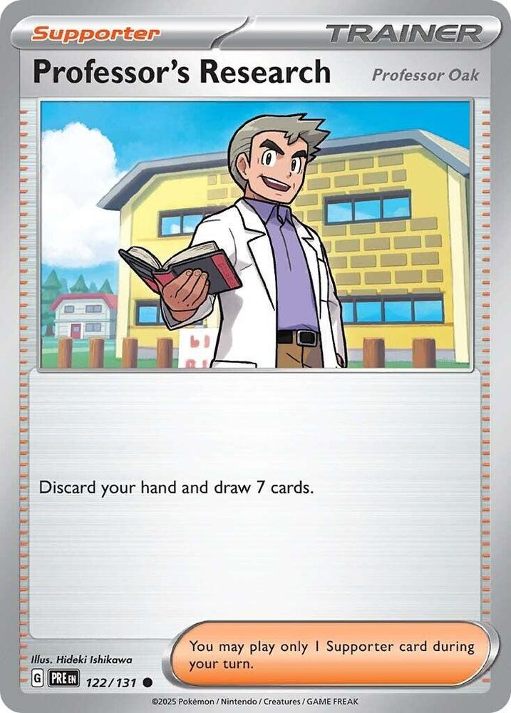
x3x3
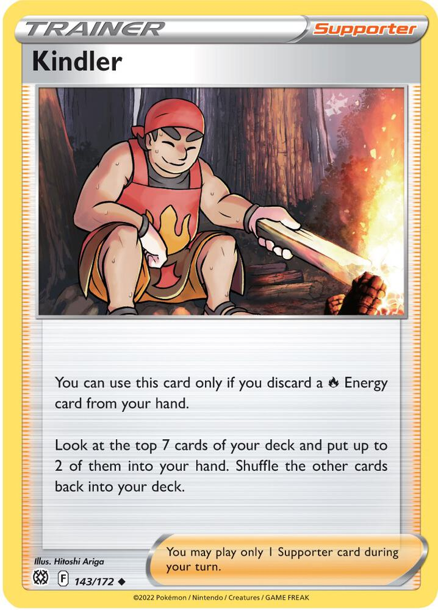
x2
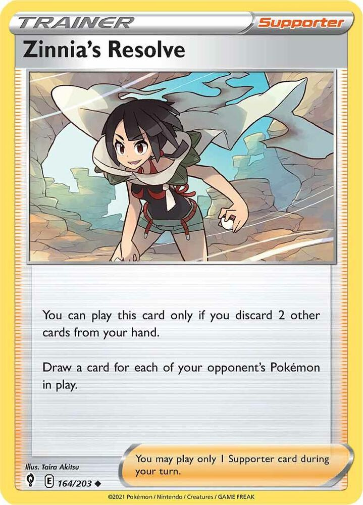
x4x3
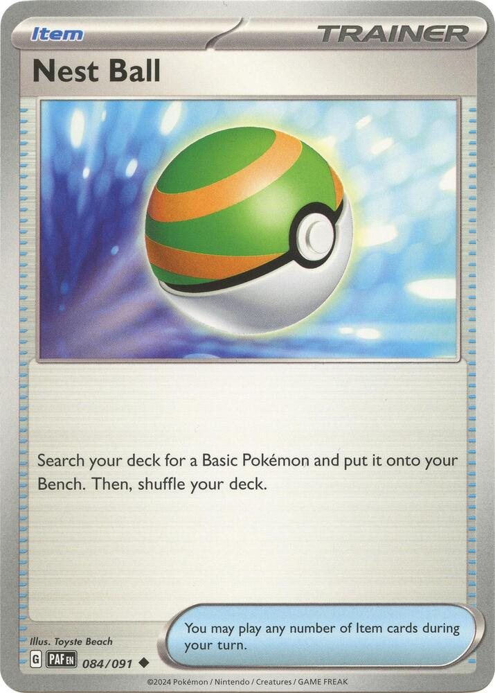
x3
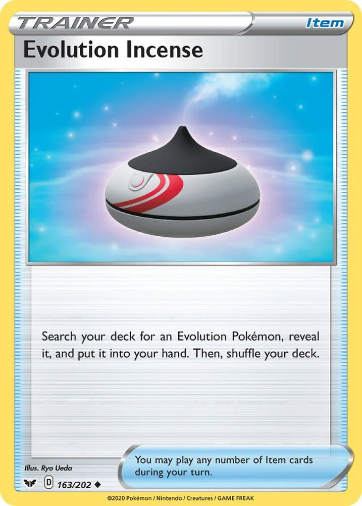
x2
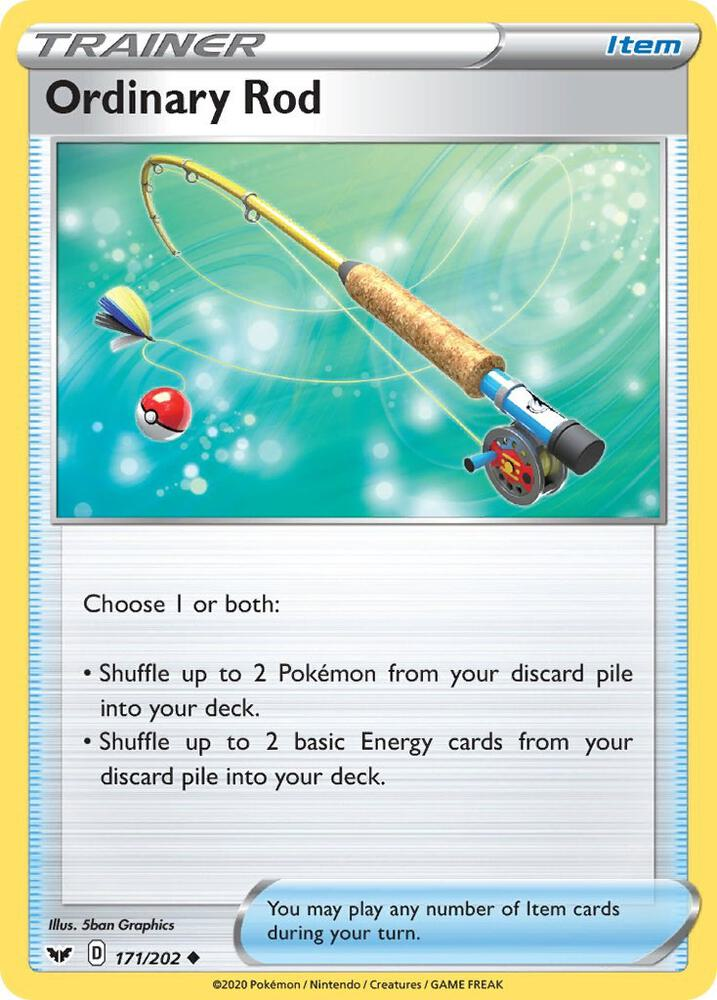
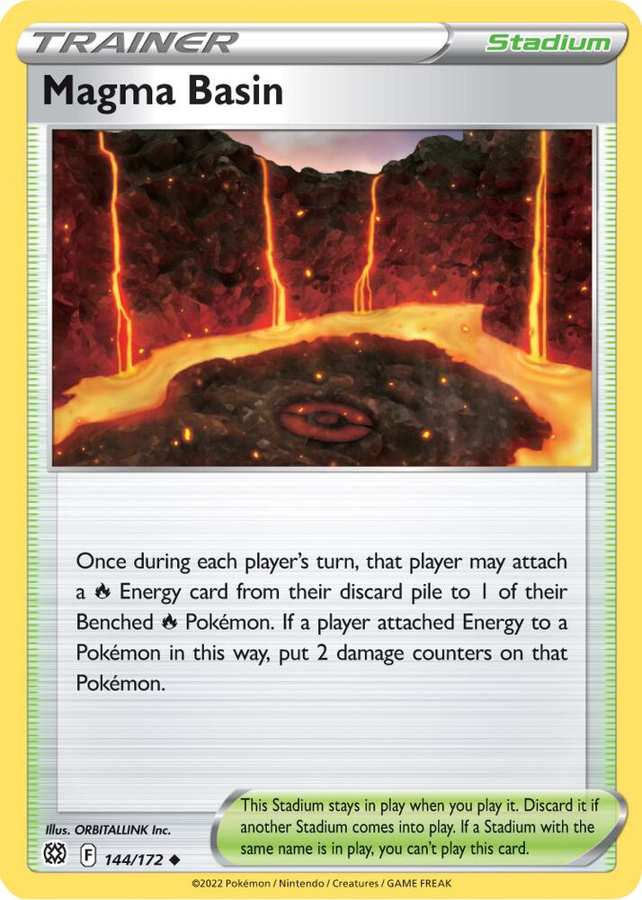
x2x13
Pokémon
Charmanderx4
Set
SWSH04: Vivid Voltage
Number
023/185
Type
Fire
HP
70
Stage
Basic
Weakness
Water ×2
Retreat
1
Attack 1
Collect[R] — Draw a card.
Attack 2
Flare[R][R] 30
Evolution
charmander → charmeleon → charizard
General use
Charmander is a seed. Its job is to sit on your Bench early so you can grow a Charizard on top of it later. That's it. Don't expect it to fight.
You have 4 because you can't build a Charizard without one, and because you need a Basic Pokémon in your opening hand or you have to mulligan.
Pairing
Rare Candy — turns a Charmander straight into a Charizard. Skips Charmeleon completely.
Nest Ball — grabs a Charmander from your deck and puts it right on the Bench.
Magma Basin — can load Energy onto a benched Charmander before it grows up.
Strategy
Play more than one. The most common beginner mistake is putting down one Charmander and saving the rest "for later." Don't. Your dad can only knock out one Pokémon per turn. Every Charmander you didn't bench is a Charizard you can't build.
Two or three Charmander on the Bench early is not being greedy. It's insurance.
Collect costs one Fire Energy and draws a card. It's a real option on a turn where you have nothing better to do — but if you're attacking with Charmander, something has already gone wrong.
Charmeleonx2
Set
SWSH04: Vivid Voltage
Number
024/185
Type
Fire
HP
90
Stage
Stage 1 (from Charmander)
Weakness
Water ×2
Retreat
2
Attack 1
Slash[R] 20
Attack 2
Raging Flames[R][R] 60 — Discard the top 3 cards of your deck.
Evolution
charmander → charmeleon → charizard
General use
Charmeleon is the slow road to Charizard. When you have a Rare Candy, you skip right past him. When you don't, he's how you get there anyway.
You only have 2 because he's the backup plan, not the main plan.
Evolution Incense — finds a Charmeleon or a Charizard from your deck.
Rare Candy — the card that lets you skip him. If Candy is in your hand, leave Charmeleon alone.
Strategy
Here's the timing rule that matters most: Rare Candy can't be used on your first turn, and can't be used on a Basic you played that same turn.
So if you can't Rare Candy yet, evolving Charmander → Charmeleon is still a good play. A Charmeleon on turn two is a Charizard on turn three. A Charmander sitting there hoping for a Rare Candy might be a Charizard on turn three... or might still be a Charmander on turn six.
Don't use Raging Flames unless you have to. 60 damage sounds nice, but throwing away the top 3 cards of your deck can lose you a Charizard, a Leon, or an Energy you needed. Slash for 20 is often the smarter attack while you wait.
Charizardx3
Set
SWSH04: Vivid Voltage
Number
025/185
Type
Fire
HP
170
Stage
Stage 2 (from Charmeleon)
Weakness
Water ×2
Retreat
3
Ability
Battle Sense — Once during your turn, look at the top 3 cards of your deck and put 1 into your hand. Discard the other 2.
Attack
Royal Blaze[R] 100+— Does 50 moredamage for each Leoncard in your discard pile.
Evolution
charmander → charmeleon → charizard
General use
This is your best card and the whole point of the deck. 170 HP is the biggest number on either side of the table.
Royal Blaze starts at 100 damage for just two Fire Energy. Then it gets bigger every time a Leon card ends up in your discard pile. Learn this table — it's the most important math in your deck:
Leon cards in your discard pile
Royal Blaze damage
0
100
1
150
2
200
3
250
4
300
Your dad's Gengar and Weezing both have 130 HP. So with just one Leon in your discard pile, Royal Blaze knocks out anything he has, in one hit. That's the number to aim for.
Battle Sense is free every single turn. Use it every turn. It costs nothing, it doesn't end your turn, and it digs you toward what you need.
Pairing
Leon — read the Game Plan called The Leon Engine. These two cards are really one card.
Welder — puts both Fire Energy on in a single turn, so Charizard can attack the moment it arrives.
Switch — with a retreat cost of 3, Switch is basically the only way to move Charizard.
Magma Basin — loads Energy onto Charizard while it's still on the Bench.
Strategy
Use Battle Sense before you do anything else, every turn. It's the most-forgotten card text in the deck. Look at 3, keep 1. Even when you already know what you want to do, look first — you might find something better. Just remember the other 2 cards get discarded, so don't do it when you can't afford to lose them.
Get the Energy on before Charizard arrives. Charizard needs [R][R]. If it walks into the Active Spot with nothing attached, it just stands there for two turns getting hit. Load a benched Charmander or Charmeleon with Energy first, or use Welder the same turn Charizard shows up.
That retreat cost of 3 is a real weakness, and your dad's deck knows it. His Weezing makes your Active Pokémon Confused, and Confused only wears off when the Pokémon leaves the Active Spot. A Confused Charizard is stuck flipping coins unless you spend a Switch on it. Keep a Switch in hand when you can.
Eeveex3
Set
SV: Prismatic Evolutions
Number
074/131
Type
Colorless
HP
50
Stage
Basic
Weakness
Fighting ×2
Retreat
1
Ability
Boosted Evolution — As long as this Pokémon is in the Active Spot, it can evolve during your first turn or the turn you play it.
Attack
Reckless Charge[C] 30— This Pokémon also does 10 damage to itself.
Evolution
eevee → flareon
(Eevee can evolve into lots of things. In this deck, it becomes Flareon.)
General use
Eevee's Ability breaks one of the game's biggest rules. Normally you cannot evolve a Pokémon on the turn you play it. Eevee can — as long as it's in the Active Spot.
That means: play Eevee Active, evolve it into Flareon right away. A Stage 1 attacker on turn one. Nothing else in your deck is that fast.
Nest Ball — careful! Nest Ball puts a Basic on your Bench, and Boosted Evolution only works in the Active Spot.
Strategy
Read the Ability really carefully. It says Active Spot. An Eevee on the Bench is a normal, boring Eevee — you have to wait a full turn to evolve it. An Eevee in the Active Spot can turn into Flareon immediately.
So if you want the fast Flareon, play Eevee as your Active Pokémon, not to the Bench.
50 HP is tiny. It's the smallest number in either deck. Your dad's Gengar does 130 damage pretty easily, so an Eevee left sitting around is a free Prize card for him. Either evolve it fast or accept that you're using it as a shield.
Careful with Reckless Charge. 30 damage is okay, but the 10 damage to itself means Eevee is now at 40 HP and even easier to knock out. Only do it if you're fine losing that Eevee.
Flareonx2
Set
SV: Prismatic Evolutions
Number
013/131
Type
Fire
HP
130
Stage
Stage 1 (from Eevee)
Weakness
Water ×2
Retreat
2
Attack 1
Destructive Flame[R] 30 — Flip a coin. If heads, discard an Energy from your opponent's Active Pokémon.
Attack 2
Fighting Blaze[R][C][C] 90+ — Does 90 more if your opponent's Active Pokémon is a Pokémon ex or V.
Evolution
eevee → flareon
General use
Flareon is your early attacker. It shows up way faster than Charizard and it hits hard enough to matter — 130 HP is the same as your dad's Gengar and Weezing.
Its real weapon is Destructive Flame. Only 30 damage, but on heads it throws away one of his Energy cards.
Pairing
Eevee — play Eevee Active, then Flareon on the same turn. Fastest start in the deck.
Leon — Leon's +30 works on any of your attacks, not just Charizard's. Flareon with Leon does 120.
Magma Basin — Flareon is a Fire Pokémon, so Magma Basin can power it up on the Bench.
Strategy
Destructive Flame is better than it looks, and here's why. Your dad's deck has only 12 Energy cards in 60, and he can only attach 1 per turn. Every Energy you knock off is a whole turn of his stolen. Doing that to a Weezing he's setting up can wreck his big two-turn combo.
It's a coin flip, so it won't always work. Do it anyway — 30 damage plus a 50% chance to ruin his turn is a fine deal.
Sudowoodox2
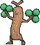
Set
SWSH01: Sword & Shield Base Set
Number
100/202
Type
Fighting
HP
100
Stage
Basic
Weakness
Grass ×2
Retreat
1
Attack 1
Double Draw[C] — Draw 2 cards.
Attack 2
Flail[C] — Does 10 damage for each damage counter on this Pokémon.
Evolution
sudowoodo(doesn't evolve)
General use
Sudowoodo is the secret weapon, and it is the card your dad is most scared of. Here's why:
Sudowoodo is a Fighting type. Every single Pokémon in your dad's deck is Weak to Fighting ×2.
That means Sudowoodo's damage gets doubled against Gastly, Haunter, Gengar, Koffing, and Weezing. All of them.
And Flail gets stronger the more beaten up Sudowoodo is. Every damage counter on Sudowoodo is 10 more damage — then doubled.
Pairing
Switch — get a damaged Sudowoodo into the Active Spot right when it's scariest.
Ordinary Rod — puts a knocked-out Sudowoodo back in your deck to use again.
Strategy
Learn this table. It wins games.
Damage on Sudowoodo
Flail does
Doubled vs Dark Pokémon
20
20
40
40
40
80
50
50
100
70
70
140 ← knocks out Gengar or Weezing
90
90
180
At 70 damage taken, Sudowoodo one-shots anything your dad has. For one Energy. Any Energy.
So Sudowoodo is a revenge attacker. You want it to get hurt. The plan:
Put Sudowoodo out where it will take a hit.
Let your dad attack it. Now it's damaged — which means it's dangerous.
Switch it into the Active Spot if it isn't already.
Flail for double damage.
Free bonus: his own Stadium helps you. His Risky Ruins puts 2 damage counters on your Basic Pokémon when you bench them. On Sudowoodo, that's 20 free Flail damage — 40 after doubling. His own card arms your best weapon. Don't tell him.
The danger: Sudowoodo only has 100 HP. At 70 damage it's terrifying, but it's also 30 away from dying. You get about one shot. Make it count — use Boss's Orders to drag out the Pokémon you most want gone, then Flail it.
Trainers — Supporters
Leonx4
Set
SWSH04: Vivid Voltage
Number
154/185
Type
Trainer — Supporter
General use
Leon does two jobs at once, and the second one is the sneaky part.
Job 1 (right now): every attack you make this turn does +30 damage.
Job 2 (forever after): when your turn ends, the Leon card goes to your discard pile — and Charizard'sRoyal Blaze does 50 more damage for each Leon in your discard pile.
So Leon isn't a card you "use up." Using it is how you power up Charizard. Every Leon you play makes every future Royal Blaze permanently stronger.
Flareon — Leon boosts any attack. Flareon's Fighting Blaze goes from 90 to 120.
Sudowoodo — Leon's +30 happens before Weakness doubles it, so it turns into +60 against your dad's Dark Pokémon.
Professor's Research — can dump extra Leons into the discard, which is exactly where you want them.
Strategy
The +30 lands before the doubling. That matters a lot. The card says "before applying Weakness and Resistance." So if you Leon up a Sudowoodo Flail, the +30 gets added first and then the whole thing doubles. That's a hidden +60.
The first Leon is the most important one. Look at the jump:
0 Leon in discard → Royal Blaze does 100. His Gengar (130 HP) survives.
1 Leon in discard → Royal Blaze does 150. His Gengar dies.
Getting that first Leon into the discard is the single biggest power spike in your deck.
The perfect first Charizard turn: play Leon, then attack with Royal Blaze. 100 + 30 = 130, which knocks out a Gengar or a Weezing exactly. And the Leon you just played is now in your discard, so next turn Royal Blaze does 150 all by itself.
You have 4 Leons. Play them freely. They're worth more used than saved.
Welderx2
Set
Battle Academy (#25 Charizard Stamped)
Number
189/214
Type
Trainer — Supporter
General use
Welder is the strongest card in either deck. It breaks the biggest rule in the game.
Normally you attach 1 Energy per turn. Welder attaches 2 more — and then draws you 3 cards for doing it.
Two Fire Energy is exactly what Charizard'sRoyal Blaze costs. So Welder can turn a bare Charizard into a fully-loaded Charizard in one turn.
Pairing
Charizard — [R][R] in one turn. This is the dream.
Kindler — Kindler wants Fire Energy in your hand; Welder wants Fire Energy in your hand. Don't run out.
Strategy
Save it for the big turn. Don't Welder a Charmander on turn one just because you can. Welder is worth the most when it turns "my Charizard can't attack" into "my Charizard attacks right now." Hold it until that turn exists.
Remember it still uses your Supporter for the turn. A turn where you Welder is a turn you cannot play Leon. So think it through: is it better to power up Charizard this turn, or hit 30 harder this turn? Usually the answer is get the Energy down first — you can Leon next turn.
Professor's Research [Professor Oak]x3
Set
SV: Prismatic Evolutions
Number
122/131
Type
Trainer — Supporter
General use
The big reset. Throw your whole hand away, draw 7 fresh cards. Simple and powerful.
Pairing
Leon — discarding a spare Leon is good, because Charizard counts Leons in your discard pile.
Ordinary Rod — gets back Pokémon and Energy you threw away.
Magma Basin — Fire Energy you discard here isn't lost. Magma Basin pulls it back out.
Strategy
But in this deck, discarding is sometimes a bonus. You are one of the few decks that wants things in its discard pile:
Extra Leon → makes Royal Blaze bigger. Great.
Extra Fire Energy → Magma Basin can put it right back onto a Pokémon. Fine.
A spare Charmander → Ordinary Rod can shuffle it back. Fine.
Your only Rare Candy or your only Charizard → bad. Don't.
Best time to play it: when your hand is down to 1 or 2 useless cards. Trading 2 junk cards for 7 fresh ones is fantastic. Trading 6 good cards for 7 random ones usually isn't.
Boss's Orders [Ghetsis]x3
Set
ME01: Mega Evolution
Number
114/132
Type
Trainer — Supporter
General use
This is how you choose who you fight.
Your dad puts a big healthy Pokémon in front and hides the hurt ones on his Bench. Boss's Orders reaches past the big one and drags out whoever you want.
Pairing
Charizard — drag out the Pokémon Royal Blaze can finish.
Sudowoodo — drag out a Gengar, then Flail it for double.
Leon — you can't play both in one turn (one Supporter per turn!), so plan a turn ahead.
Strategy
This is your finishing card. Late in the game, when you need one more Prize to win, the answer is almost always Boss's Orders. He hides a hurt Pokémon on the Bench thinking it's safe. It isn't.
Use it on Gengar before it grows up. Your dad's Gengar has an Ability called Infinite Shadow: if it gets knocked out, it goes back to his hand instead of the discard pile, and it brings its whole family with it. Annoying!
But that only helps him after it's already a Gengar. If you Boss's Orders a Gastly off his Bench and knock it out while it's still small, there's no Gengar yet — so nothing comes back. Killing the little ones early is worth more than it looks.
Kindlerx2
Set
SWSH09: Brilliant Stars
Number
143/172
Type
Trainer — Supporter
General use
Dig deep. Throw away one Fire Energy, then look at the top 7 cards of your deck and keep any 2 you like.
Seven cards is a lot. You will almost always find something good.
Pairing
Magma Basin — the perfect partner. Kindler's discarded Energy goes to the discard pile, and Magma Basin attaches Energy from the discard pile. So the cost is basically free.
Basic Fire Energy — you need one in hand or you can't play Kindler at all.
Strategy
Kindler + Magma Basin is a real combo, and it's a good one to learn. On its own, Kindler costs you an Energy card. But if Magma Basin is on the table, that Energy isn't gone — it's just moved to a place where Magma Basin can pick it up and attach it to a benched Fire Pokémon.
You paid nothing and looked at 7 cards. That's a great deal.
You must have a Fire Energy in hand. If you don't, you can't play Kindler at all — it's a dead card. Keep that in mind before you dump your whole hand to Professor's Research.
Pick carefully from the 7. You only keep 2, and the rest get shuffled back. Usually the right picks are: whatever you need to attack this turn, plus whatever you need to attack next turn.
Zinnia's Resolvex1
Set
SWSH07: Evolving Skies
Number
164/203
Type
Trainer — Supporter
General use
The bigger your dad's board, the more cards you draw. "In play" means everything — his Active Pokémon and his whole Bench.
His deck loves a big Bench. He plays Gastly and Koffing everywhere so his Gengar hits harder. Every one of those is a card for you.
Pairing
Ordinary Rod — gets back Pokémon and Energy you discarded to pay for it.
Leon — a great thing to discard as your cost, since Leon is better in your discard pile.
Strategy
How many cards is it really? Count his side of the table:
His Pokémon in play
You draw
2
2 (not worth it)
4
4 (okay)
5
5 (good)
6
6 (great)
He can have at most 6 — 1 Active plus 5 on the Bench. So Zinnia's Resolve tops out at 6 cards.
Wait for his board to fill up. Playing this on turn one when he has one lonely Gastly out draws you 1 card and costs you 2. That's terrible. Playing it on turn four against a full board draws 6.
Pick your discards on purpose. You have to throw away 2 cards. Best choices: a spare Leon (goes where you want it anyway) and a spare Fire Energy (Magma Basin can get it back). Worst choices: your only Charizard, your only Rare Candy.
You only have 1 of this card, so there's no rush. Wait for the great turn.
Trainers — Items
Rare Candyx4
Set
ME01: Mega Evolution
Number
125/132
Type
Trainer — Item
General use
A time machine. Charmander goes straight to Charizard, and Charmeleon never happens. It turns a three-turn wait into one turn.
Nest Ball — gets the Charmander down early so the Candy is legal when you want it.
Strategy
The fastest legal Charizard is turn two: bench Charmander on turn one, Rare Candy on turn two.
Don't Rare Candy a Charmander that's Active and about to die. If you put your Charizard on top of a Charmander that's one hit from being knocked out, your dad takes a Prize card and your Charizard in the same turn. Rare Candy the Charmander on your Bench, and bring Charizard out when you choose.
Ultra Ballx3
Set
ME01: Mega Evolution
Number
131/132
Type
Trainer — Item
General use
Finds any Pokémon in your deck. Basic, Stage 1, Stage 2 — doesn't matter. The price is throwing away 2 cards from your hand first.
You must be able to pay. With fewer than 2 other cards in hand, you can't play it at all.
Leon — the best card to discard, because your discard pile is where Leon belongs.
Strategy
Discard smart, and the cost almost disappears. The perfect Ultra Ball discards a spare Leon (which powers up Royal Blaze) and a spare Fire Energy (which Magma Basin can put back into play). You just paid nothing.
Never discard: your last Rare Candy, your last Charizard, or a Supporter you were about to play.
Play it before your Supporter. Once you know what you found, you'll know which Supporter you actually want.
Nest Ballx3
Set
SV: Paldean Fates
Number
084/091
Type
Trainer — Item
General use
Free and easy. Grab a Basic Pokémon out of your deck and put it straight onto the Bench — no cost, no discard, no Energy.
Sudowoodo — grab your secret weapon exactly when you need it.
Rare Candy — Nest Ball a Charmander this turn so you can Candy it next turn.
Strategy
It goes to the Bench, not the Active Spot. That's almost always what you want — but it's the one thing to watch with Eevee. Eevee's Boosted Evolution Ability only works in the Active Spot. A Nest Ball Eevee lands on the Bench and can't use it.
If you want the fast Flareon, play Eevee from your hand as your Active Pokémon instead.
Turn one, use these first. Nest Ball costs you nothing, so there's never a reason to hold it. Get your board built.
Evolution Incensex1
Set
SWSH01: Sword & Shield Base Set
Number
163/202
Type
Trainer — Item
General use
Finds any Pokémon that isn't a Basic. In your deck that means: Charmeleon, Charizard, or Flareon.
It's like Ultra Ball but you don't have to discard anything. The trade is that it can't get Basics.
Flareon — grab it to drop on an Active Eevee for a fast start.
Rare Candy — Incense finds the Charizard, Candy puts it down.
Strategy
Free is a big deal. No discard cost means you can play this when your hand is nearly empty, which is exactly when Ultra Ball stops working. Keep that difference in mind.
You only have 1. Save it for the turn you actually need a specific evolution. If you already have a Charizard in hand, don't waste it.
Switchx2
Set
ME01: Mega Evolution
Number
130/132
Type
Trainer — Item
General use
Free retreat. Move your Active Pokémon to the Bench and bring out whoever you want, without paying any Energy.
Pairing
Charizard — retreat cost 3 is huge. Switch is basically the only way to move it.
Sudowoodo — bring a beaten-up Sudowoodo out at the perfect moment to Flail.
Only 2 copies, so don't waste them. Save Switch for a stuck attacker or a Confusion problem — not just to shuffle things around.
Switch also saves a Pokémon that's about to die. If your Charizard is at 20 HP and it's his turn next, Switching it to the Bench means he has to knock out something else first.
Ordinary Rodx1
Set
SWSH01: Sword & Shield Base Set
Number
171/202
Type
Trainer — Item
General use
The undo button. Takes up to 2 Pokémon and up to 2 Energy back out of your discard pile — that's up to 4 cards — and shuffles them into your deck.
Pairing
Professor's Research — the card that throws stuff away. This is the card that gets it back.
Charizard — the card you most want back after one gets knocked out.
Strategy
Save it for when you actually need it. You only have 1. Playing it on turn two to rescue one Charmander is a waste. Playing it late, when both your Charizards are dead and you're running low on Energy, can win the game.
"Basic Energy" means your Fire Energy. All 13 of your Energy cards are Basic, so any of them can come back.
Trainers — Tool & Stadium
Magma Basinx2
Set
SWSH09: Brilliant Stars
Number
144/172
Type
Trainer — Stadium
General use
Extra Energy, every single turn, out of your discard pile. This is the closest thing you have to unlimited fuel.
It costs you 2 damage counters (20 damage) on whatever you attach to, and it only works on Benched Fire Pokémon.
Pairing
Kindler — Kindler discards a Fire Energy; Magma Basin picks it right back up. The two cards cancel each other's cost out.
Charizard / Flareon — both are Fire, so both can be loaded up on the Bench.
Strategy
Remember: Bench only. You can't use Magma Basin on your Active Pokémon. So power things up before they go out to fight.
Sudowoodo can't use it either.Sudowoodo is a Fighting Pokémon, not a Fire one. Magma Basin skips it.
The Stadium war. Your dad plays Risky Ruins, which is also a Stadium — and only one Stadium can be on the table at a time. Playing yours throws his away, and playing his throws yours away.
That's why you have 2. When he replaces your Magma Basin, you can put it right back. Whoever runs out of Stadiums first has to live with the other person's.
Energy
Basic Fire Energyx13
Set
MEE: Mega Evolution Energies (any Fire Energy works)
Number
002
Type
Energy — Basic
General use
Fuel. Every attack in your deck is paid for with these.
You may attach only 1 Energy per turn from your hand. That's the rule that decides how fast your deck goes — which is exactly why Welder and Magma Basin are so good, because they get around it.
Basic Energy is the one card type with no 4-copy limit. You can play as many as you like.
Pairing
Everything. But especially Welder (2 at once from hand) and Magma Basin (1 per turn from the discard).
Kindler — you must have one in hand to play Kindler at all.
Strategy
Attach ahead of time. Put Energy on Pokémon while they're still on the Bench, before you need them out front. A Charizard that arrives with [R][R] already attached can attack immediately. One that arrives empty stands there doing nothing for two turns while it gets hit.
This is the number one mistake new players make. Plan one turn ahead.
Fire Energy also pays for [C]. A Colorless symbol means "any Energy." So a Fire Energy works fine for Sudowoodo'sFlail [C] and Eevee'sReckless Charge [C][C]. You never need a second Energy type.
Here's what each attacker costs:
Pokémon
Attack
Cost
Energy needed
Sudowoodo
Flail
[C]
1
Flareon
Destructive Flame
[R]
1
Charizard
Royal Blaze
[R][R]
2
Eevee
Reckless Charge
[C][C]
2
Flareon
Fighting Blaze
[R][C][C]
3
Notice that your two best attacks — Royal Blaze and Flail — only need 1 or 2 Energy. Your deck is cheaper to run than it looks.
Game Plans
1. The Leon Engine
This is your deck's main plan. If you only learn one thing, learn this.
Charizard'sRoyal Blaze does 50 more damage for every Leon card in your discard pile. And Leon goes to your discard pile the moment you play it.
So the more you use Leon, the stronger Charizard gets — forever.
The perfect Charizard turn
1. Use Battle Sense (free, every turn).
2. Play LEON. → all your attacks do +30 this turn
3. Attack with Royal Blaze. → 100 + 30 = 130 damage
4. Your turn ends. Leon lands in the discard pile.
130 damage knocks out his Gengar or his Weezing exactly — they both have 130 HP.
And now here's the good part. Next turn, you don't even need to play a Leon:
Turn
Leons in discard
Royal Blaze does
First Charizard turn (playing a Leon)
0
100 + 30 = 130
Next turn
1
150
Turn after that (playing another Leon)
1
150 + 30 = 180
After that
2
200
150 is the magic number. Once one Leon is in your discard, every Royal Blaze knocks out anything he owns in one hit, with no help. Getting there is your whole early game.
2. Two Speeds
Your deck has a fast plan and a strong plan. Run both at the same time.
Charizard is a Stage 2. It takes turns to build. If you spend those turns doing nothing, you'll be three Prize cards behind before your best card even shows up.
Turn one: play Eevee in the Active Spot and evolve it into Flareon right away. (Boosted Evolution lets you break the "no evolving the turn you play it" rule — but only in the Active Spot.) At the same time, put a Charmander on the Bench.
Turns two and three: attack with Flareon while Charizard grows up behind it. Destructive Flame is only 30 damage, but the coin flip can knock an Energy right off his Pokémon — and his deck only has 12 Energy in it.
Turn three or four: Flareon has done its job. Bring out a fully-loaded Charizard and start the Leon Engine.
The point: Flareon isn't supposed to win. It's supposed to keep you in the game until Charizard can.
Every Pokémon in your dad's deck — Gastly, Haunter, Gengar, Koffing, Weezing — is Weak to Fighting ×2. Sudowoodo is the only Fighting Pokémon in either deck.
So Sudowoodo's damage gets doubled. Always. Against everything he has.
And Flail does 10 damage for each damage counter on Sudowoodo itself. The more hurt it is, the harder it hits.
The plan
1. Bench Sudowoodo. Let it sit there.
2. Let your dad attack it. Now it's damaged — which is GOOD.
3. Boss's Orders to drag out whatever you most want gone.
4. Switch Sudowoodo into the Active Spot.
5. FLAIL. For one Energy.
The numbers
Damage on Sudowoodo
Flail
Doubled vs his Dark Pokémon
20
20
40
50
50
100
70
70
140 — knocks out Gengar or Weezing
90
90
180
Add a Leon and it gets silly: the +30 happens before the doubling, so Leon is really +60 here. A Sudowoodo with 50 damage on it plus a Leon does (50 + 30) × 2 = 160.
The catch: Sudowoodo has only 100 HP. At 70 damage it's a monster, but it's also 30 away from dying. You get roughly one big Flail. Set it up properly and make it the one that matters.
4. Winning the Stadium War
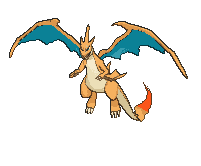
A small fight inside the big fight.
Only one Stadium can be on the table at a time. Playing a new one throws the old one in the discard pile.
Your Magma Basin gives you a free Energy every turn from your discard pile. He can't use it — he has no Fire Pokémon.
His Risky Ruins puts 20 damage on every Basic Pokémon you bench. You can't dodge it — you have no Darkness Pokémon.
So the Stadium on the table is worth a lot to whoever put it there. You each have 2.
How to play it:
Don't play Magma Basin on turn one for no reason. Wait until you actually have Fire Energy in the discard pile to pick up, or until his Risky Ruins is out and hurting you.
Replacing his Risky Ruins does two things at once: you get your Energy engine and you turn off his damage. That's why it's worth more than it looks.
Keep the second one. When he puts Risky Ruins back, you want an answer. Whoever runs out first has to live with the other person's Stadium for the rest of the game.
5. Reading Your First Hand
Turn one decides a lot of games. Here's how to play it.
Step 1: Do you have a Basic Pokémon?
If not, you mulligan — show your hand, shuffle it back, draw 7 more. Your dad draws 1 extra card. It's not a big deal, it's just a do-over.
Your Basics are Charmander, Eevee, and Sudowoodo — 9 of them in 60 cards. You'll mulligan roughly 3 games out of 10. That's normal. Don't get frustrated.
Step 2: What do you play?
Your hand has…
Do this
Eevee + Flareon
Play Eevee Active, evolve to Flareon immediately. Best possible start.
Nest Ball
Play it. It's free. Get a Charmander on the Bench.
Charmander + Charizard
Bench the Charmander. Do not try to Rare Candy — it's illegal on turn one. Candy it next turn.
A bad hand
Professor's Research. Throw it away, draw 7 fresh.
Welder
Hold it. Save it for the turn Charizard needs Energy.
Zinnia's Resolve
Hold it. His board is empty; it'd draw you 1 card.
Step 3: Attach your Energy
Put it on whatever will be attacking soonest. Usually that's the Active Eevee or Flareon.
Step 4: Remember the turn-one rules
If you went first, you cannot attack. Just set up. That's fine — it's the trade for going first.
You cannot Rare Candy on turn one, no matter what.
6. What Your Dad's Deck Is Trying To Do
Know the other side and you'll see plays coming.
His deck is all Darkness Pokémon. Two main threats:
Weezing — his early attacker (130 HP)
It's a two-turn combo:
Turn A:Pervasive Gas — 30 damage, and your Active Pokémon is now Confused.
Turn B:Crazy Blast — 170 damage.
170 is exactly your Charizard's HP. Weezing is the one card he has that can one-shot your best Pokémon.
How to fight it: the huge 170 only works if the same Weezing used Pervasive Gas on his previous turn. So when you see a Weezing use Pervasive Gas, you have one turn to react. Knock it out, or move your Charizard somewhere safe, or accept the hit on something you don't mind losing.
Gengar — his closer (130 HP)
Mind Jack costs one Energy and does 10 damage, plus 30 for every Pokémon on YOUR Bench.
Your Bench
Mind Jack does
2
70
3
100
4
130
5
160
This is the one time a big Bench is bad for you. 130 knocks out your Flareon. 160 still doesn't kill Charizard (170 HP) — Charizard is the only thing he can't one-shot with Gengar.
How to fight it: don't bench Pokémon you don't need. There's a real balance here — Zinnia's Resolve and Charizard both want you developing your board, but every extra Pokémon out there is 30 more Mind Jack damage. When Gengar is out, think before you bench.
You still get the Prize card. Knock it out anyway.
7. Mistakes That Will Cost You The Game
The specific traps in your deck. Read this one twice.
Forgetting to use Battle Sense. It's free, every turn, and it doesn't end your turn. You just threw away a free card.
Bringing Charizard out with no Energy. It sits there for 2 turns getting hit. Load it on the Bench first.
Trying to Rare Candy on turn one. Not allowed. Ever.
Rare Candy on a Charmander you played this turn. Not allowed. It had to be there since before this turn.
Rare Candy onto an Active Charmander that's about to die. He takes a Prize and your Charizard, in one turn. Candy the benched one.
Playing Eevee to the Bench and expecting to evolve it.Boosted Evolution only works in the Active Spot.
Using Fighting Blaze expecting 180. He has no ex or V Pokémon. It's just 90. Use Destructive Flame instead.
Professor's Research with a good hand. It discards, it does not shuffle back. Those cards are gone.
Zinnia's Resolve on turn one. His board is empty. You'd discard 2 to draw 1.
Kindler with no Fire Energy in hand. You literally can't play it. Dead card.
Playing two Supporters in one turn. Not allowed. One per turn.
Attacking, then trying to do other stuff.Attacking ends your turn. Do everything else first.
8. The Turn Checklist
Stick to this order and you'll stop forgetting things.
1. DRAW your card.
2. BATTLE SENSE — free, every turn, if a Charizard is in play.
3. ITEMS — as many as you want. Balls, Candy, Switch.
4. ENERGY — attach 1 from your hand.
5. MAGMA BASIN — 1 more Energy, from the discard, to a BENCHED Fire Pokémon.
6. EVOLVE — put your evolutions down.
7. SUPPORTER — only ONE. Leon? Welder? Boss's Orders?
8. ATTACK — this ENDS your turn. Always do it last.
Why this order? Because every step gives you information for the next one. If you attack first, you lose all seven other steps. If you play your Supporter before your Items, you might pick the wrong Supporter.
The single most common mistake in this whole game is attacking too early in your turn. Attack last. Always.
Your Other Eevees and Charizards
A note about the cards you own that aren't in the deck.
You have a bunch of other Eevee, Charmander, Charmeleon, and Flareon cards. Some of them look cooler than the ones in your deck. Some of them have way bigger numbers.
They're still not in the deck, and it's got nothing to do with them being old. Half your deck is old — Charizard is from 2020, Welder is from 2019, Sudowoodo is from 2020. Old is fine. Old is why we could afford good cards.
Here are the actual reasons.
Reason 1: The 4-copy limit counts NAMES, not pictures
That's names, not versions. Every card called "Charmander" shares the same 4 slots — it doesn't matter which set it's from or what the art looks like.
You already run 4 Charmander. That's the whole allowance, used up. So these five are locked out by arithmetic, not by opinion:
Card
HP
Why it's out
Charmander — Pokémon GO 008
60
4-copy limit already full
Charmander — Obsidian Flames 026
60
4-copy limit already full
Charmander — Paldean Fates 007
70
4-copy limit already full
Eevee — Hidden Fates 49
60
See Reason 2
Eevee — Twilight Masquerade 135
50
See Reason 2
Eevee — Shrouded Fable 050
70
See Reason 2
Reason 2: Your Eevee has an Ability. The others are blank.
This is the whole reason your Eevee is the one it is.
Eevee — Prismatic Evolutions 074 has Boosted Evolution: while it's in the Active Spot, it can evolve the turn you play it. That breaks one of the biggest rules in the game, and it's what gives you a Flareon on turn one.
Your other three Eevees — Hidden Fates, Twilight Masquerade, Shrouded Fable — have no Ability at all. They're just a small Pokémon that sits there for a full turn before it can become anything.
The Shrouded Fable one even has more HP (70 vs 50). Doesn't matter. A turn is worth more than 20 HP. Getting your attacker out a whole turn earlier beats surviving one extra poke, every time.
Reason 3: Charmeleon is the card you're trying to skip
Be honest with yourself about this one, because the numbers look bad for us:
Charmeleon
HP
Vivid Voltage 024 (in your deck)
90
Paldean Fates 008
90
Scarlet & Violet 151 005
100
Phantasmal Flames 012
110
The Phantasmal Flames one has 20 more HP than yours. On paper it's just better.
So why isn't it in? Because you run 4 Rare Candy and only 2 Charmeleon. Rare Candy takes Charmander straight to Charizard and skips Charmeleon completely. Charmeleon is your backup plan for when you don't draw a Candy.
Spending your good cards on the backup plan is a mistake. The 20 extra HP only matters in the games where your main plan already failed. Meanwhile, having 2 identical Charmeleon means you always know exactly what your backup does — no surprises.
Reason 4: The ex, V, and VMAX cards would break the game
These are your best-looking, most expensive cards. Flareon ex has 270 HP. Flareon VMAX has 320. Your whole deck's biggest Pokémon is a 170 HP Charizard.
So why aren't they in? Two reasons, and neither is "they're bad."
They give away extra Prize cards
Your card
HP
Prizes it gives your opponent
Charizard
170
1
Eevee V
190
2
Flareon V
210
2
Eevee ex
200
2
Flareon ex
270
2
Flareon VMAX
320
3
Your dad's entire deck is 1-Prize Pokémon. Every single one.
Games go to 6 Prize cards. So if you play a Flareon VMAX and he knocks it out, he's taken half the game from one attack. He'd only need three good turns instead of six. You'd be handing him a shortcut every time something died.
They're too strong for his deck to answer
His hardest hit is Weezing's Crazy Blast at 170 damage, and that takes him two full turns to set up.
A Flareon ex with 270 HP would need him to land that combo twice — around four turns — while your Flareon ex knocks out a 130 HP Gengar every single turn. That's not a close game. That's not really a game.
 Fox's Fire Force
Fox's Fire Force 


![Boss's Orders [Ghetsis]](./assets/654453_bosss-orders-ghetsis.jpg)